Overview
Assignment filters get created the way most Intune objects get created. Adhoc, one at a time, in a hurry, because a deployment needed one right now. 6 months later you have Win11, Windows 11 devices, W11-Test, and Filter - windows 11 (new), 3 of which do the same thing slightly differently and none of which anyone trusts. The next admin needing a Windows 11 filter will create yet another one. Rinse, repeat.
The portal offers nothing to help here. There’s no bulk create and no import, so filters go in one at a time. Fine for 1, tedious for 20, and if you’re an MSP standing up the same set for every customer it’s 20 times however many tenants you have (unless you got some Graph skillz like the kool kidz).
Defining the filters as code fixes it. You get consistent names, rules you can review before they reach the tenant, and a library you can redeploy into any tenant in about 30 seconds.
There are 2 halves to this blog. Creating filters for Windows builds and getting hold of those accurate Windows build numbers to put in them, which is what the second half is for. Filters first.
Filters
For the Microsoft Graph fans, filters live at a single endpoint:
https://graph.microsoft.com/beta/deviceManagement/assignmentFiltersThe JSON body for POST/PATCH requests isn’t hugely complex:
{
"displayName": "WIN-OS-Min-W11-23H2",
"description": "Windows 11 23H2 or newer",
"platform": "windows10AndLater",
"rule": "(device.operatingSystemVersion -ge \"10.0.22631\")",
"assignmentFilterManagementType": "devices",
"roleScopeTags": ["0"]
}The one to watch is assignmentFilterManagementType. It takes devices or apps.
You’ll need DeviceManagementConfiguration.ReadWrite.All to Create/Update Filters through the Graph.
Limitations
A few limits worth knowing as per the docs Create assignment filters in Microsoft Intune:
- 200 assignment filters per tenant. Generous, until every team starts creating one-off filters nobody else understands.
- 3,072 characters per filter. You will not hit this with a version rule. You might with a long
-inlist of version numbers or alike. - Managed app filters apply to app protection policies and app configuration policies only. The docs are explicit that they don’t apply to other policies like compliance or device configuration profiles. Worth knowing before you build a beautiful set of
APP-filters and wonder why you can’t select them anywhere. - Managed device filters need the device enrolled in Intune. Obvious when you say it out loud, less obvious when you’re wondering why a filter preview looks wrong.
Platform
Working with filters in the UI is relatively straight forward. When creating filters through Graph you’ll want to validate the platform enums. They are documented at devicePlatformType enum type – Microsoft Graph beta | Microsoft Learn
{kind=link}
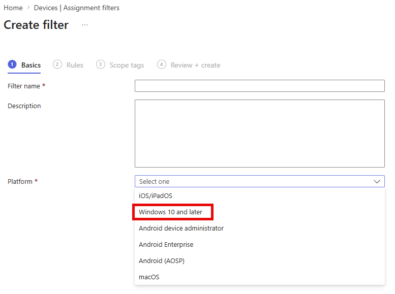
If you wan’t your first Graph call to check the filters in your tenant. Try:
Connect-MgGraph -Scopes "DeviceManagementConfiguration.Read.All" -NoWelcome
$filters = (Invoke-MgGraphRequest -Method GET -Uri "https://graph.microsoft.com/beta/deviceManagement/assignmentFilters").value
$filters | Select-Object displayName, platform, assignmentFilterManagementType, rule | Format-Table -AutoSize{kind=link}
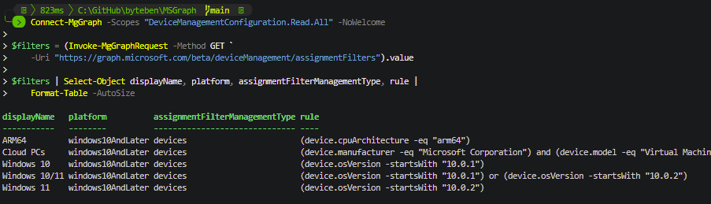
In this post we are going to be using windows10AndLater.
Naming
Good practice dictates you should have a naming convention for anything you create in Entra/Intune. Before you generate anything, make a decision on this. At assignment time filters appear alphabetically in a flat, fairly narrow dropdown, and the person choosing one often didn’t create it.
I am not the oracle of truth here, but im going with this pattern for a naming convention:
<PLATFORM>-<CATEGORY>-<SPECIFIC>With a product code in the <SPECIFIC> part wherever the same label could mean 2 different things. Example:
- WIN-OS-Min-W11-23H2
Windows, OS version, minimum, Windows 11 23H2 - WIN-OS-Only-W11-23H2
Windows, OS version, that release only - WIN-MFR-Lenovo
Windows, manufacturer, Lenovo
The W11 is in there because 22H2 was a Windows 10 release and a Windows 11 release on different builds, so the release number alone isn’t always unique.
Windows Build Numbers
Every version number in a filter library is a constant. 10.0.22621 is Windows 11 22H2, 10.0.26100 is 24H2, and if you fat-finger one the filter still saves happily and matches precisely nothing.
Note: The osVersion property is being deprecated. Use operatingSystemVersion when building your filters (even though operatingSystemVersion is still marked as in public preview).
The meat and bone of this post is to help you understand that you don’t have to hardcode them. The Windows Update for Business deployment service publishes a catalog through Graph and it will hand you the build numbers after some filtering.
Windows ships new releases and retires old ones, so a filter library that was accurate the week you built it naturally drifts. The script further down is written to be re-run. Point it at the catalog again in 6 months and whatever has shipped since is just there in the output, so you top up the filters you care about instead of going hunting for build numbers a second time.
Catalog
The entries live here:
https://graph.microsoft.com/beta/admin/windows/updates/catalog/entries3 entry types come back. qualityUpdateCatalogEntry covers the monthly cumulatives, and expanding its productRevisions gives you the OS builds each update applies to. featureUpdateCatalogEntry covers feature updates, which I come back to later. recoveryUpdateCatalogEntry covers quick machine recovery updates and isn’t relevant here.
The quality update revisions are what we’re after:
{
"id": "10.0.19045.6809",
"product": "Windows 10",
"version": "22H2",
"displayName": "Windows 10, version 22H2, build 19045.6809",
"osBuild": {
"majorVersion": 10,
"minorVersion": 0,
"buildNumber": 19045,
"updateBuildRevision": 6809
},
"knowledgeBaseArticle": { "id": "KB5073724" }
}osBuild breaks the version into its 4 parts, which is exactly the pattern operatingSystemVersion in the filter compares against. The properties are documented at productRevision resource type and buildVersionDetails resource type.
WindowsUpdates.Read.All is enough to poke the endpoint and here is a snippet that will let you poke around:
Connect-MgGraph -Scopes 'WindowsUpdates.Read.All' -NoWelcome
$uri = @(
'https://graph.microsoft.com/beta/admin/windows/updates/catalog/entries'
"?`$filter=isof('microsoft.graph.windowsUpdates.qualityUpdateCatalogEntry')"
'&$expand=microsoft.graph.windowsUpdates.qualityUpdateCatalogEntry/productRevisions'
'&$orderby=releaseDateTime desc'
'&$top=1'
) -join ''
$entry = (Invoke-MgGraphRequest -Method GET -Uri $uri -OutputType PSObject).value[0]
$entry.displayName
$entry.productRevisions | Select-Object product, version, @{n='Build'; e={$_.osBuild.buildNumber}}{kind=link}
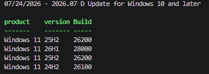
This example shows 1 catalog entry, and every build it applies to.
The $filter focuses on quality updates, because feature update entries have no productRevisions to expand. The $expand pulls the builds back with the entry.
Worth looking at that display name of that catalog entry too. D Update is the optional non-security release that ships later in the month, not the Patch Tuesday one, and the newest entry in the catalog is often one of these.
There’s no Windows 10 in that list, despite the entry being called “for Windows 10 and later”. Windows 10 is past end of support, so anything still receiving updates is doing so through ESU, and ESU is security updates only.
So the newest entry is not the whole picture. If you built a filter library from that 1 call you’d have no Windows 10 filters at all, which is why the script we share later does more.
Note: $top is capped at 5 on this endpoint.
Scaling that example up is mostly paging through the Graph results. This script will pull a few entries instead of 1, flatten every revision out of every entry, and de-dupe the results.
Connect-MgGraph -Scopes 'WindowsUpdates.Read.All' -NoWelcome
$uri = @(
'https://graph.microsoft.com/beta/admin/windows/updates/catalog/entries'
"?`$filter=isof('microsoft.graph.windowsUpdates.qualityUpdateCatalogEntry')"
'&$expand=microsoft.graph.windowsUpdates.qualityUpdateCatalogEntry/productRevisions'
'&$orderby=releaseDateTime desc'
'&$top=5'
) -join ''
$entries = [System.Collections.Generic.List[object]]::new()
$page = 0
do {
$response = Invoke-MgGraphRequest -Method GET -Uri $uri -OutputType PSObject
foreach ($entry in $response.value) { $entries.Add($entry) }
$uri = $response.'@odata.nextLink'
$page++
}
while ($uri -and $page -lt 4)
$builds = foreach ($entry in $entries) {
foreach ($revision in $entry.productRevisions) {
$build = $revision.osBuild
[pscustomobject]@{
Product = $revision.product
Release = $revision.version
BaseBuild = '{0}.{1}.{2}' -f $build.majorVersion, $build.minorVersion, $build.buildNumber
BuildNumber = [int]$build.buildNumber
}
}
}
$builds |
Sort-Object BaseBuild -Unique |
Sort-Object BuildNumber |
Format-Table Product, Release, BaseBuild -AutoSizeNice. Every Windows build Microsoft is currently servicing, in about 20 lines of code.
{kind=link}
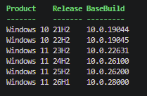
Sort-Object BaseBuild -Unique is doing the deduplication.
Windows 11 26H1 is a Problem Child
There’s a wrong assumption for everything you’re about to do with these build numbers. A higher build number means a newer release. That logic held for decades…but it doesn’t any more (Thank you Microsoft).
Windows 11 26H1 is build 28000. Windows 11 26H2, announced in June 2026 and the later release, is build 26300. Math broken Will Robinson.
26H1 arrived in Canary as 28000, deliberately breaking from the 26xxx numbering. It carries platform changes for specific silicon rather than features. 24H2, 25H2 and 26H2 share a servicing branch and move between themselves with an enablement package, while 26H1 sits on a different Windows core. Check the current Windows Insider blog.
The obvious way we would have expressed a version filter is with a greater-than-or-equal comparison. Like:
(device.operatingSystemVersion -ge "10.0.28000")Call that “26H1 or newer” and it’s wrong the moment 26H2 ships, because 26300 is lower than 28000. Doh. Any rule with its floor set at 28000 or above stops matching the newest release in your estate the day 26H2 arrives at 26300. A device that upgrades from 25H2 to 26H2 goes from matching your baseline to not matching it, by moving forwards.
It works the other way too. Every -ge rule drawn below 28000 picks up 26H1 devices, because 28000 is higher than everything else in the list.
Note: 26H2 isn’t in the output of the script at the time of the blog, even though I keep mentioning it. The catalog is the Windows Update for Business deployment service catalog, so it lists what the service can deploy to production devices. Insider builds aren’t deployable through it and don’t appear, and as I write this 26H2 is still Experimental.
Generating Filters
The Script
This script, MSGraph/Get-IntuneWindowsVersionFilter.ps1 at main · byteben/MSGraph, is similar to the builds example above but with a naming convention bolted on, so instead of a list of builds you get a list of filter definitions ready to be created. 2 per release, following the <PLATFORM>-<CATEGORY>-<SPECIFIC> pattern from earlier, with the rule text written out for each one.
Note: By default this script only generates the definitions. Add -Create to make them, which I cover further down.
<#
.SYNOPSIS
Generates Intune assignment filter definitions for every in-support Windows release.
.DESCRIPTION
Reads the Windows Update for Business deployment service catalog through Microsoft
Graph and returns two assignment filter definitions per Windows release:
WIN-OS-Min-<product>-<release> that release or newer, for servicing baselines
WIN-OS-Only-<product>-<release> that release and nothing else
For builds that have an LTSC edition it also returns a pair of SKU scoped filters,
since LTSC and the GA channel share a build number:
WIN-OS-Only-<product>-<release>-GAC that build, General Availability Channel
WIN-OS-Only-<product>-<release>-LTSC that build, LTSC editions only
Use -NoSkuVariants to suppress those if you have no LTSC devices.
Rules are built against the operatingSystemVersion property, which supports version
comparison operators. Each "Only" rule is bounded one build wide, so it cannot absorb
an out-of-support release sitting in the gap above it.
DeployableUntil comes from the feature update catalog entries and is the date the
release stops being offered as an upgrade. It is blank for releases the deployment
service no longer offers, which includes Windows 10 and the silicon specific builds.
Read-only by default. With -Create it presents the definitions in a grid, and creates
or updates whatever you tick. Matching is on display name, so a second run patches a
drifted rule rather than making a duplicate. Supports -WhatIf.
.NOTES
Requires : Microsoft.Graph.Authentication
WindowsUpdates.Read.All, plus DeviceManagementConfiguration.ReadWrite.All
when -Create is used
Endpoint : beta only, subject to change
Roles : Intune Administrator or Windows Update Deployment Administrator
The catalog reports the General Availability Channel release for a build. LTSC shares
its build number with the GA channel and nothing in the API identifies which builds
have an LTSC edition, so those builds are listed in $LtscBuilds by hand. Verify the
SKU names in $LtscSkus against the device properties reference before you deploy
anything that depends on them.
.EXAMPLE
$filters = .\Get-IntuneWindowsVersionFilter.ps1
Returns the definitions as objects. Nothing is written to the tenant.
.EXAMPLE
.\Get-IntuneWindowsVersionFilter.ps1 -Create -WhatIf
Opens the grid, then reports what would be created or updated without doing it.
.EXAMPLE
.\Get-IntuneWindowsVersionFilter.ps1 -NoSkuVariants
Skips the LTSC and GAC filters entirely.
#>
[CmdletBinding(SupportsShouldProcess)]
param(
# Skip the GAC and LTSC scoped filters if you have no LTSC in the estate
[switch]$NoSkuVariants,
# Pick filters from a grid and create them in Intune. Without this the script
# only returns the definitions and touches nothing
[switch]$Create
)
# Builds that have an LTSC edition sharing the build number with the GA channel.
# Nothing in the update catalog identifies LTSC, so this is maintained by hand.
# LTSC ships roughly every 3 years, so add a line when the next one lands.
$LtscBuilds = @{
'10.0.19044' = 'LTSC 2021'
'10.0.26100' = 'LTSC 2024'
}
# SKU values reported by LTSC editions. Check these against the device properties
# reference for your own estate, IoT variants have been reported not to match.
$LtscSkus = '"EnterpriseS", "EnterpriseSN"'
# Install the Microsoft Graph SDK if required
if (-not (Get-Module -ListAvailable -Name Microsoft.Graph.Authentication)) {
Install-Module Microsoft.Graph.Authentication -Scope CurrentUser
}
Import-Module Microsoft.Graph.Authentication
# Only ask for write access if we're actually going to write
$scopes = @('WindowsUpdates.Read.All')
if ($Create) { $scopes += 'DeviceManagementConfiguration.ReadWrite.All' }
Connect-MgGraph -Scopes $scopes -NoWelcome
# The catalog endpoint allows a maximum of five entries per page
$uri = @(
'https://graph.microsoft.com/beta/admin/windows/updates/catalog/entries'
"?`$filter=isof('microsoft.graph.windowsUpdates.qualityUpdateCatalogEntry')"
'&$expand=microsoft.graph.windowsUpdates.qualityUpdateCatalogEntry/productRevisions'
'&$orderby=releaseDateTime desc'
'&$top=5'
) -join ''
$entries = [System.Collections.Generic.List[object]]::new()
$maximumPages = 4
$page = 0
# Retrieve up to 20 recent catalog entries
do {
$response = Invoke-MgGraphRequest -Method GET -Uri $uri -OutputType PSObject
foreach ($entry in $response.value) {
$entries.Add($entry)
}
$uri = $response.'@odata.nextLink'
$page++
}
while ($uri -and $page -lt $maximumPages)
# Feature update entries carry the build number directly, along with the date the
# release stops being deployable. Only covers releases still offered as an upgrade
$featureUri = 'https://graph.microsoft.com/beta/admin/windows/updates/catalog/entries' +
"?`$filter=isof('microsoft.graph.windowsUpdates.featureUpdateCatalogEntry')"
$deployableUntil = @{}
foreach ($feature in (Invoke-MgGraphRequest -Method GET -Uri $featureUri -OutputType PSObject).value) {
if ($feature.buildNumber -and $feature.deployableUntilDateTime) {
$deployableUntil[[string]$feature.buildNumber] = [datetime]$feature.deployableUntilDateTime
}
}
# Flatten to one row per revision. Patch level is deliberately discarded
$versions = foreach ($entry in $entries) {
foreach ($revision in $entry.productRevisions) {
$build = $revision.osBuild
[pscustomobject]@{
Product = $revision.product
Release = $revision.version
BaseBuild = '{0}.{1}.{2}' -f $build.majorVersion, $build.minorVersion, $build.buildNumber
BuildNumber = [int]$build.buildNumber
Prefix = '{0}.{1}' -f $build.majorVersion, $build.minorVersion
DeployableUntil = $deployableUntil[[string]$build.buildNumber]
}
}
}
# One row per Windows release
$windowsVersions = $versions |
Sort-Object BaseBuild -Unique |
Sort-Object BuildNumber
# Short code per product, so 22H2 filters can't be confused between Windows 10 and 11
function Get-ProductCode {
param([string]$ProductName)
switch ($ProductName) {
'Windows 10' { 'W10'; break }
'Windows 11' { 'W11'; break }
default { $ProductName -replace '\s', '' }
}
}
$filters = foreach ($version in $windowsVersions) {
$code = Get-ProductCode -ProductName $version.Product
$label = '{0} {1}' -f $version.Product, $version.Release
# A release occupies exactly one build number; only the revision moves.
# So the upper bound is this build plus one, not the next release in the list.
# Bounding on the next release would swallow any out-of-support build in between.
$upperBound = '{0}.{1}' -f $version.Prefix, ($version.BuildNumber + 1)
# This release or newer. A servicing baseline, and deliberately crosses products
[pscustomobject]@{
Product = $version.Product
Release = $version.Release
BaseBuild = $version.BaseBuild
DeployableUntil = $version.DeployableUntil
FilterName = 'WIN-OS-Min-{0}-{1}' -f $code, $version.Release
FilterDescription = '{0} or newer. Build {1} and above, including later Windows releases.' -f $label, $version.BaseBuild
FilterRule = '(device.operatingSystemVersion -ge "{0}")' -f $version.BaseBuild
}
# This release and nothing else. The range is one build wide and never
# depends on what comes next
$lower = 'device.operatingSystemVersion -ge "{0}"' -f $version.BaseBuild
$upper = 'device.operatingSystemVersion -lt "{0}"' -f $upperBound
$onlyRule = "($lower) and ($upper)"
[pscustomobject]@{
Product = $version.Product
Release = $version.Release
BaseBuild = $version.BaseBuild
DeployableUntil = $version.DeployableUntil
FilterName = 'WIN-OS-Only-{0}-{1}' -f $code, $version.Release
FilterDescription = '{0} only. Build {1} and its revisions.' -f $label, $version.BaseBuild
FilterRule = $onlyRule
}
# Only builds with an LTSC edition get the SKU split. Everything else has
# nothing to separate, so a -LTSC filter there would never match anything
if (-not $NoSkuVariants -and $LtscBuilds.ContainsKey($version.BaseBuild)) {
$ltscName = $LtscBuilds[$version.BaseBuild]
[pscustomobject]@{
Product = $version.Product
Release = $version.Release
BaseBuild = $version.BaseBuild
DeployableUntil = $version.DeployableUntil
FilterName = 'WIN-OS-Only-{0}-{1}-GAC' -f $code, $version.Release
FilterDescription = '{0}, General Availability Channel only. Build {1} is shared with {2}, which this excludes.' -f $label, $version.BaseBuild, $ltscName
FilterRule = "$onlyRule and (device.operatingSystemSKU -notIn [$LtscSkus])"
}
[pscustomobject]@{
Product = $version.Product
Release = $version.Release
BaseBuild = $version.BaseBuild
DeployableUntil = $version.DeployableUntil
FilterName = 'WIN-OS-Only-{0}-{1}-LTSC' -f $code, $version.Release
FilterDescription = '{0} {2} only. Build {1}, restricted to LTSC SKUs.' -f $label, $version.BaseBuild, $ltscName
FilterRule = "$onlyRule and (device.operatingSystemSKU -in [$LtscSkus])"
}
}
}
# Estate wide SKU filters. No version bound at all, so these cover every LTSC
# release including ones the catalog never returns, and never need regenerating
if (-not $NoSkuVariants) {
$filters += [pscustomobject]@{
Product = 'Windows'
Release = 'Any'
BaseBuild = ''
DeployableUntil = $null
FilterName = 'WIN-SKU-LTSC'
FilterDescription = 'All LTSC devices, any build. Covers releases the update catalog does not return.'
FilterRule = "(device.operatingSystemSKU -in [$LtscSkus])"
}
$filters += [pscustomobject]@{
Product = 'Windows'
Release = 'Any'
BaseBuild = ''
DeployableUntil = $null
FilterName = 'WIN-SKU-GAC'
FilterDescription = 'All non LTSC devices, any build.'
FilterRule = "(device.operatingSystemSKU -notIn [$LtscSkus])"
}
}
Write-Host ""
Write-Host ("Generated {0} filter definitions from {1} Windows releases" -f
$filters.Count, $windowsVersions.Count) -ForegroundColor Cyan
# Without -Create the definitions go to the pipeline and nothing is touched.
# PowerShell formats objects with more than 4 properties as a list, so running
# it bare looks the same as it always did
if (-not $Create) {
return $filters
}
# ---------------------------------------------------------------------------
# Creation
# ---------------------------------------------------------------------------
if (-not (Get-Command Out-GridView -ErrorAction SilentlyContinue)) {
throw 'Out-GridView is not available. On Linux or macOS install Microsoft.PowerShell.ConsoleGuiTools and swap it for Out-ConsoleGridView.'
}
Write-Host 'Opening the grid, tick the filters you want and click OK.' -ForegroundColor Cyan
$selected = @($filters |
Select-Object Product, Release, BaseBuild, DeployableUntil, FilterName, FilterDescription, FilterRule |
Out-GridView -Title 'Select the filters to create in Intune' -PassThru)
if (-not $selected) {
Write-Host 'Nothing selected, nothing created.' -ForegroundColor Yellow
return
}
Write-Host ("Selected {0} of {1}" -f $selected.Count, $filters.Count) -ForegroundColor Cyan
$baseUri = 'https://graph.microsoft.com/beta/deviceManagement/assignmentFilters'
# Existing filters, so a second run patches rather than duplicates
$existing = @{}
$uri = $baseUri
do {
$response = Invoke-MgGraphRequest -Method GET -Uri $uri -OutputType PSObject
foreach ($filter in $response.value) { $existing[$filter.displayName] = $filter }
$uri = $response.'@odata.nextLink'
}
while ($uri)
Write-Host ("Tenant already has {0} assignment filters" -f $existing.Count) -ForegroundColor Cyan
Write-Host ""
$created = 0; $updated = 0; $unchanged = 0
foreach ($definition in $selected) {
$description = '{0} Generated from the WUfB catalog on {1:yyyy-MM-dd}.' -f
$definition.FilterDescription, (Get-Date)
$current = $existing[$definition.FilterName]
if ($current) {
if ($current.rule -eq $definition.FilterRule) {
Write-Host (" Exists {0}" -f $definition.FilterName) -ForegroundColor DarkGray
Write-Host (" rule already matches, nothing to do") -ForegroundColor DarkGray
$unchanged++
continue
}
Write-Host (" Update {0}" -f $definition.FilterName) -ForegroundColor Yellow
Write-Host (" old rule: {0}" -f $current.rule) -ForegroundColor DarkGray
Write-Host (" new rule: {0}" -f $definition.FilterRule) -ForegroundColor DarkGray
$updated++
if ($PSCmdlet.ShouldProcess($definition.FilterName, 'Update assignment filter')) {
# platform and management type are immutable, so don't send them
$patchBody = [ordered]@{
description = $description
rule = $definition.FilterRule
} | ConvertTo-Json -Depth 10
Invoke-MgGraphRequest -Method PATCH -Uri "$baseUri/$($current.id)" `
-Body $patchBody -ContentType 'application/json'
}
}
else {
Write-Host (" Create {0}" -f $definition.FilterName) -ForegroundColor Green
Write-Host (" {0}" -f $definition.FilterRule) -ForegroundColor DarkGray
$created++
if ($PSCmdlet.ShouldProcess($definition.FilterName, 'Create assignment filter')) {
$body = [ordered]@{
'@odata.type' = '#microsoft.graph.deviceAndAppManagementAssignmentFilter'
displayName = $definition.FilterName
description = $description
platform = 'windows10AndLater'
rule = $definition.FilterRule
assignmentFilterManagementType = 'devices'
roleScopeTags = @('0')
} | ConvertTo-Json -Depth 10
Invoke-MgGraphRequest -Method POST -Uri $baseUri `
-Body $body -ContentType 'application/json'
}
}
}
Write-Host ""
Write-Host ("Created {0}, updated {1}, already correct {2}" -f
$created, $updated, $unchanged) -ForegroundColor Cyan{kind=link}
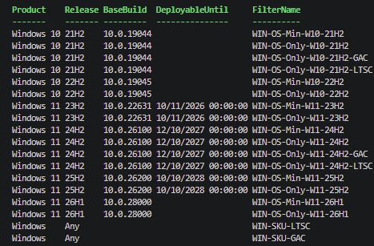
{kind=link}
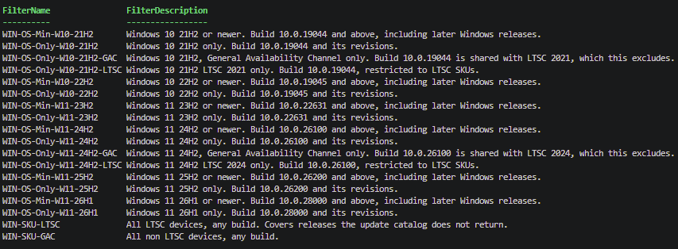
{kind=link}
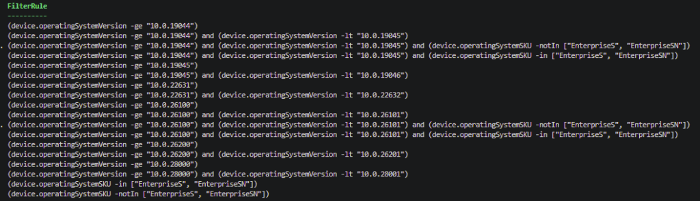
LTSC
You’ll have spotted Windows 10 21H2 in the results because a cumulative update in July 2026 is still being serviced. GA channel Windows 10 21H2 went out of support back in 2024, so the only reason build 19044 is still being serviced is Enterprise LTSC 2021 and IoT Enterprise LTSC 2021.
That’s because LTSC shares its build number with the GA channel. LTSC 2021 is 19044, the same as Windows 10 21H2. LTSC 2024 is 26100, the same as Windows 11 24H2. An LTSC device and a GA device on the same build are indistinguishable by version number, so no operatingSystemVersion filter rule will separate them.
I wanted the script to work out which builds have an LTSC edition rather than me maintaining a list. There’s a friendlyNames property on the product, so let’s have a look at it. Feed it a KB number from the revisions you already pulled.
Connect-MgGraph -Scopes 'WindowsUpdates.Read.All' -NoWelcome
foreach ($kb in 5101684, 5099539) {
$uri = "https://graph.microsoft.com/beta/admin/windows/updates/products/FindByKbNumber(kbNumber=$kb)"
$products = (Invoke-MgGraphRequest -Method GET -Uri $uri -OutputType PSObject).value
foreach ($product in $products) {
[pscustomobject]@{
KB = $kb
Name = $product.name
FriendlyNames = $product.friendlyNames -join ' | '
}
}
}{kind=link}
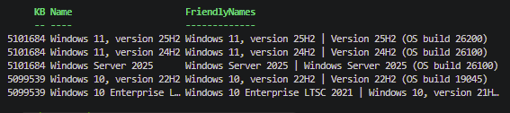
Windows 10 LTSC is in there as its own product. “Windows 10 Enterprise LTSC 2021”, named, sitting alongside 22H2.
Windows 11 LTSC 2024 is not. Build 26100 comes back as Windows 11 24H2 and as Windows Server 2025, and that’s your lot. Enterprise LTSC 2024 runs on that same build and the catalog never mentions it.
So 26100 is 3 products. Windows 11 24H2, Windows Server 2025, and Windows 11 Enterprise LTSC 2024. The API will name 2 of them. Building detection on friendlyNames would only ever work for Windows 10, which is the half on its way out, and would miss the one that matters for the next decade.
Note: There’s no list endpoint (that I could find) for products. You can only get at them with FindByKbNumber or FindByCatalogId, so there’s no way to enumerate everything and go looking for LTSC.
Which leaves a hand maintained list, and it’s the only hardcoding in the script (im sorry).
$LtscBuilds = @{
'10.0.19044' = 'LTSC 2021'
'10.0.26100' = 'LTSC 2024'
}LTSC ships every 2 or 3 years, so this isn’t the sort of thing that goes stale between blog posts. Build numbers change monthly and come from the API. LTSC releases don’t, and the API doesn’t have them.
Note: There’s no entry for LTSC 2019 because build 17763 never comes back from the catalog, so a key for it would sit there matching nothing. It’s supported until January 2029 though.
operatingSystemSKU is the property that separates them, because it describes the edition rather than the build. LTSC editions report as EnterpriseS, so the 2 filters you actually want have no version in them at all:
- WIN-SKU-LTSC (device.operatingSystemSKU -in [“EnterpriseS”, “EnterpriseSN”])
- WIN-SKU-GAC (device.operatingSystemSKU -notIn [“EnterpriseS”, “EnterpriseSN”])
They cover every LTSC release including the ones the API doesn’t show, they don’t care what build anything is on, and they never need regenerating.
The script also generates a version bounded pair for each build in the list above, for if you ever need to be specific about a release:
(device.operatingSystemVersion -ge "10.0.26100") and (device.operatingSystemVersion -lt "10.0.26101") and (device.operatingSystemSKU -in ["EnterpriseS", "EnterpriseSN"])Feature Updates
One more thing in that catalog worth having. The featureUpdateCatalogEntry entries carry the build number directly and they know when a release stops being deployable.
{
"@odata.type": "#microsoft.graph.windowsUpdates.featureUpdateCatalogEntry",
"displayName": "Windows 11, version 25H2",
"deployableUntilDateTime": "2028-10-10T00:00:00Z",
"version": "Windows 11, version 25H2",
"buildNumber": "26200"
}- Windows 11, version 23H2 22631 deployable until 2026-11-10
- Windows 11, version 24H2 26100 deployable until 2027-10-12
- Windows 11, version 25H2 26200 deployable until 2028-10-10
What’s interesting is there is no Windows 10, because it isn’t an upgrade target any more, and no 26H1, because it only ever arrives on devices that ship with it. So this can’t replace the quality update route for finding builds. What it does give you is how long each release has left, which is exactly the question you’re asking when you decide which filters are worth creating. The script pulls it in and adds DeployableUntil to every filter it generates, blank where the API has nothing to say.
Which Filters Should You Actually Create?
Not all of them. The script generates the full matrix because I have no idea what your baseline is.
Look at the top row. WIN-OS-Min-W10-21H2 is -ge “10.0.19044”, and 19044 is the lowest build in the list, so every in-support Windows device satisfies it. That filter is a long winded way of writing “all devices” and Intune already has one of those.
A Min filter is only worth creating at a build you’ve actually decided to draw a line at. Most organisations have 1 or 2 of those, not 6. If your supported floor is Windows 11 23H2, take Min-W11-23H2 and bin the rest. DeployableUntil helps you here, a release with 2 years left is worth building a filter around, one that stops being deployable in a few months is worth a filter for chasing stragglers and not much else.
Only filters are for releases you’re doing something specific with. Piloting the newest one, chasing the last few off the oldest, scoping an app that misbehaves on a particular build.
Treat the output as a menu and take the rows that match decisions you’ve actually made. The 200 filter cap isn’t really your constraint, the dropdown is, and version filters look more alike than most things in it.
Creating Filters
Everything so far only reports. Go ahead and use the output to build your filters manually in the UI, im not going to teach you how to do that.
If you want to use Graph and PowerShell (we can be friends), the same script will create them. Run it with -Create and it opens a grid so you can tick the ones you want.
MSGraph/Get-IntuneWindowsVersionFilter.ps1 at main · byteben/MSGraph
.\Get-IntuneWindowsVersionFilter.ps1 -CreateNote: -Create asks for DeviceManagementConfiguration.ReadWrite.All on top of the read scope. Without the switch it only ever asks for WindowsUpdates.Read.All.
{kind=link}
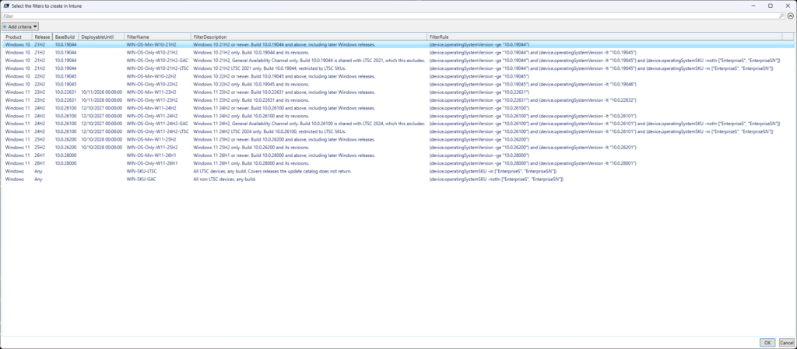
{kind=link}
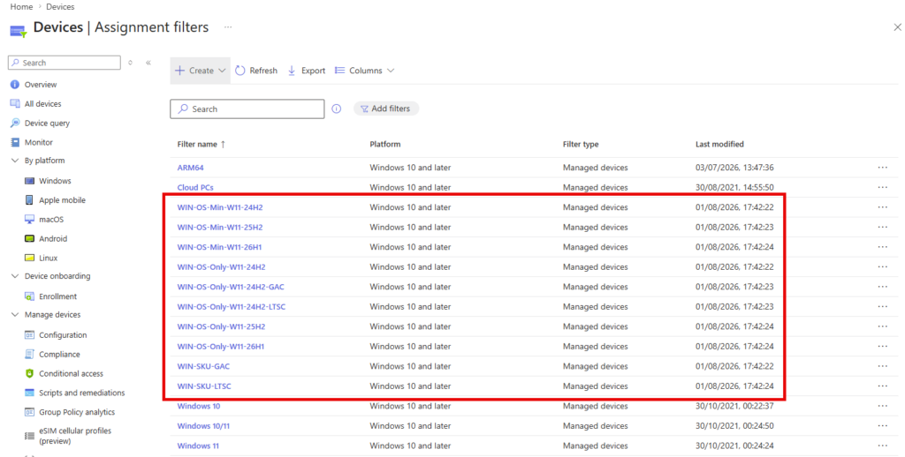
The script is idempotent. Matching is on display name, so running it again patches a filter whose rule has drifted rather than creating a duplicate, and leaves alone anything already correct.
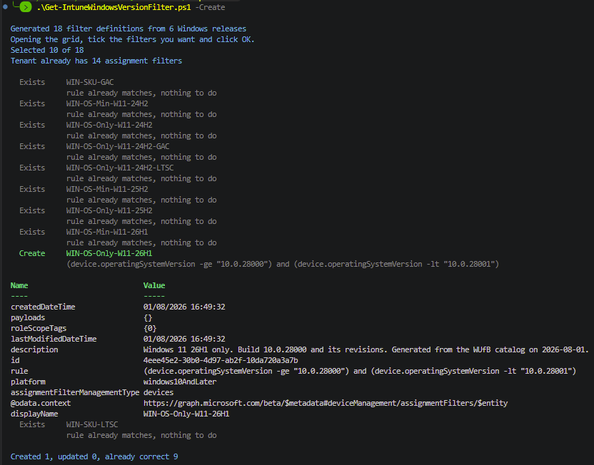
There’s -WhatIf too, which does the selection and tells you what it would do without touching anything.
.\Get-IntuneWindowsVersionFilter.ps1 -Create -WhatIfGotchas
- Platform and management type are immutable. You can’t PATCH a filter from devices to apps, or change its platform. Get it wrong and the fix is delete and recreate, which breaks every assignment referencing it.
- Filters can’t be deleted while in use.
- Only use the 4th part of the build number deliberately. It’s the build patch level, it changes monthly.
- A higher build number no longer means a newer release. 26H1 is 28000, 26H2 is 26300.
- Absence from this API is not absence from your estate. LTSC 2019 is supported until 2029 and build 17763 doesn’t show up at all.
Summary
I went into this wanting to stop hardcoding build numbers and came out with a better appreciation of how much the update catalog knows and how much it deliberately doesn’t tell you.
The build numbers are all there and they’re accurate. The servicing story around them is not so we had to color in some missing pieces.
What I’d really like is for the LTSC editions to turn up in the product data. It already knows about Windows Server 2025 sharing build 26100, and about IoT Enterprise as a distinct edition elsewhere in the API. Adding Enterprise LTSC to that would cost very little and would let all of us stop maintaining lookup tables in scripts. If anyone from the product group is reading, that’s the ask (or show me the light/endpoint where we can get this).
Happy filtering folks!